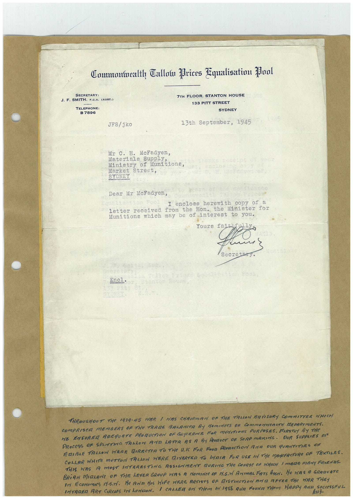

Book 1 · scan 062


Description
Transcription
Context
Review notes
Compare the machine draft with the scan. Handwriting and names need human review.
Artifacts
Edit the artifacts field in this note’s frontmatter to change these records. This summary is generated.
B01-S062-A01 — Letter & Handwritten note — Book 1, scan 062
Types: Typed document, Letter, Handwritten note
Scope: Whole scanned page; individual items can be split out during review.
Caption: Not mapped yet.
Caption source: Not recorded yet.
Caption status: unmapped
Machine transcription
Commontealth Callow prices Equalisation Mool SECRETARY: J. F. SMITH, F.C.A. (AUST.) TELEPHONE: B 7896 JFS/ jko 7TH FLOOR, STANTON HOUSE 133 PITT STREET SYDNEY 13th September, 1945 Mr C. H. McFadyen, Materials suppLy. Ministry of Munitions Market Street, SYDNEY Dear Mr McFadyen, I enclose herewith copy of a letter received from the Hon. Minister for Munitions which may be of interest to you. Yours fa Secre Encl• TNROUGHOUT THe 1939-45 WAR 1 HAS CHRIRMAN OF THE TALLOW RAVISORY COMMITTER WHICH COMPRISCR MEMBERS OF THe TRADE BALANCeR By NomineeS OF COmmONweRATN EPARTMENTS. HE ENSUREA AREQUATE PROMUCTION DF GLYCERINE FOR MUNITIONS PURPOSES, FIRSTLY BY THe PROCESS OF SPLITTINO TALLOW AND LATER AS A BY PRODUCT OF SORP MARING. OUR SUPPLIES DIE ERIBLE TALLOW HERE MIRECTER TO THE UI FOR FOOD PRORUCTION ArA OUR QURNTITHES OF COLLAR WHITE MUTTON TALLON WERE DIVERTED TO INDIA FOR USE IN THe MAINFACTURe OF TEXTILES. THIS HAS A MOST INTERESTING ASSIGNMENT RURING THE COURSE OF WHICH / MARE MANY FRIENDS. BRiAN MOLANE OF THE LEVER GROUP WAS A NOMINCe OF IY.S.N ANImAL FATS ASSA. He HAS A GRAQUATe In EcoNomies ds.n. He AND HIS HIFe WERE ARTISTS OF GISTINCTION ArE AFTER THe WAR THEY INVADER ART CIRCLES IN honoN. I CALLER oN THem IN 1956 ANa FoUNTHem HADPY AND SOCCeSSFU hunt